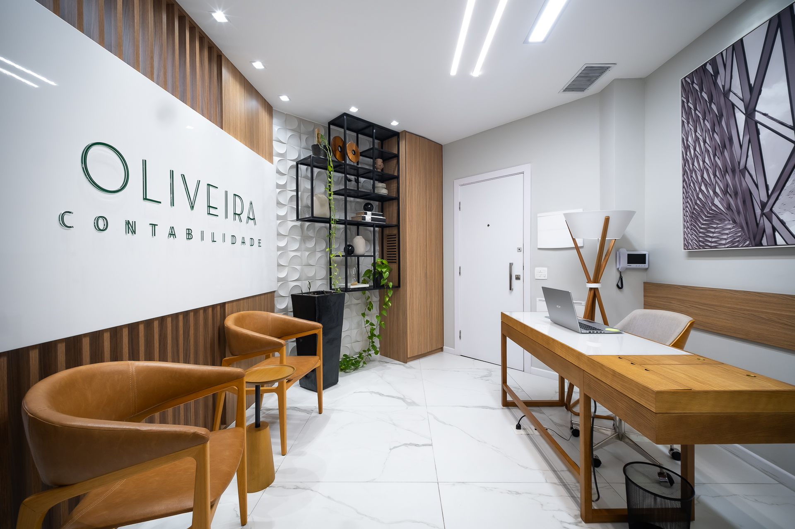

Tradição e inovação para o futuro do seu empreendimento. Contabilidade, fiscal, pessoal e jurídico empresarial trabalhando na mesma mesa.
{{ w }}
É assim que as conversas costumam chegar até nós. Cada uma aponta para uma das seis frentes do escritório.

Quatro movimentos que se repetem enquanto a empresa existe — e que se ajustam a cada nova fase dela.
{{ st.r }}
Contador e advogado, na rotina contábil desde 2003. A responsabilidade técnica do escritório tem nome, registro e presença nas reuniões.
Escolha um tema e siga para uma conversa guiada de poucos passos.